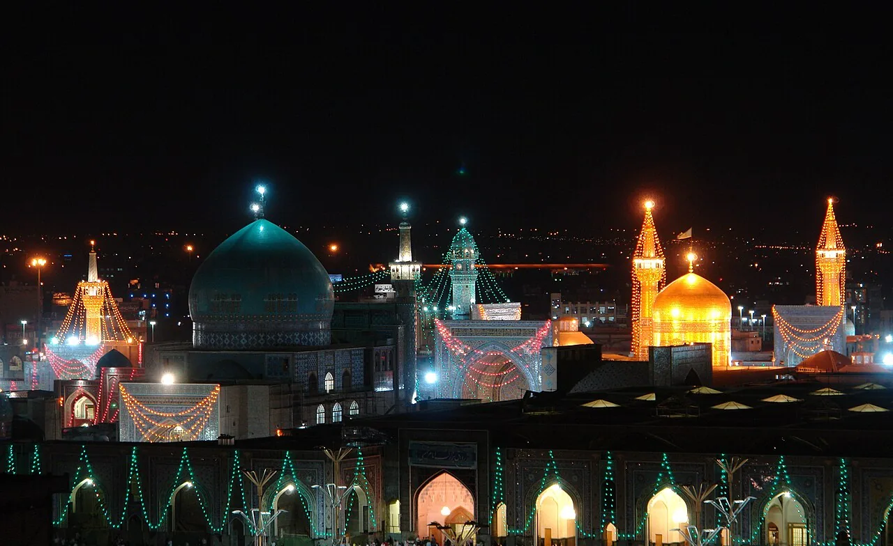

دليل مشهد المقدسة · معلومات للزائر العربي
مشهد المقدسة: الدليل الشامل للزيارة والإقامة والعلاج
الإجابة المختصرة
مشهد المقدسة تجمع زيارة حرم الإمام الرضا مع خيارات للإقامة والتنقل وتجارب ثقافية وعلاجية. خطط للرحلة بحسب مدة الزيارة واحتياجات الأسرة وميزانيتك، وتحقق مسبقاً من ترتيبات السفر والخدمات المتاحة. يساعدك هذا الدليل على تنظيم الأولويات قبل الوصول إلى المدينة.
دليل شامل للزائر العربي إلى مشهد ايران: محور السياحة الدينية في إيران وزيارة حرم الإمام الرضا، السياحة للعائلات في مشهد، الإقامة، التنقل، السفر من العراق، تخطيط الميزانية، والسياحة العلاجية.

ابدأ التخطيط لزيارة مشهد المقدسة (قلب السياحة في إيران للزائر العربي)
تحتل مدينة مشهد مكانة مركزية في السياحة في ايران؛ فهي تختلف عن طهران (باعتبارها العاصمة الإدارية ومحطة العبور الجوي أو الطبي الأولى) وعن شمال ايران (بغاباتها الساحلية المطلة على بحر قزوين)، إذ تجمع رحلة دينية إلى مشهد بين زيارة حرم الإمام الرضا عليه السلام وأجواء مصايف جبال بينالود القريبة في طرقبه وشانديز. يجمع هذا الدليل المعلومات العملية التي يحتاجها الزائر قبل السفر: تحديد مدة الرحلة، تنظيم الزيارة، اختيار الإقامة، الوصول من المطار، التنقل داخل المدينة، وإعداد ميزانية تناسب احتياجات العائلة.
زيارة حرم الإمام الرضا
خطط للزيارة مع مراعاة أوقات الراحة واحتياجات كبار السن والأطفال، واتبع التعليمات المعلنة في الحرم. جهز وثائق السفر والأدوية الشخصية الموصوفة، وتأكد من قواعد الدخول والتنقل عند اقتراب موعد الزيارة.
الإقامة والوصول والتنقل
قارن موقع السكن وبعده عن الحرم، وإمكانية الوصول، وشروط الإلغاء، والسعر النهائي. عند الوصول، خطط للنقل من المطار بحسب وقت الهبوط وعدد المسافرين والأمتعة.
الإقامة قرب الحرم
أسئلة تساعدك على اختيار مكان مناسب.
اقرأ الدليل ↙فندق قصر مشهد والغرف الملكية
صور حقيقية لأجنحة العرسان والرويال مع بدائل اقتصادية وشقق مفروشة.
استكشف الفندق ↙شهر العسل وسياحة الأزواج في مشهد
أجنحة العرسان الفاخرة وبرنامج رومانسي هادئ قرب الحرم وشانديز.
اقرأ الدليل ↙السفر إلى مشهد للشباب والعزاب
خطة السكن الفردي، المترو، والنشاطات الترفيهية بدون سماسرة.
اقرأ الدليل ↙من مطار مشهد إلى الحرم
ترتيب الوصول ووسيلة النقل.
اقرأ الدليل ↙تكلفة رحلة مشهد
بنود الميزانية التي ينبغي حسابها.
اقرأ الدليل ↙السفر من العراق والأسرة والمعالم
تختلف متطلبات السفر باختلاف الجنسية ووثائق المسافر؛ تحقق منها من المصادر الرسمية قبل شراء التذاكر. إذا كنت تسافر مع أطفال أو كبار سن، اترك وقتاً كافياً للراحة وقلل التنقلات المرهقة.
السياحة العلاجية في مشهد
يمكن أن تكون مشهد وجهة لمن يبحث عن استشارة أو علاج، لكن اختيار الطبيب والمستشفى قرار طبي يجب أن يعتمد على تقييم مهني مباشر. قبل السفر، أرسل التقارير عبر قناة آمنة للجهة الصحية، واستوضح الخطة والتكلفة والمخاطر ومدة الإقامة والمتابعة.